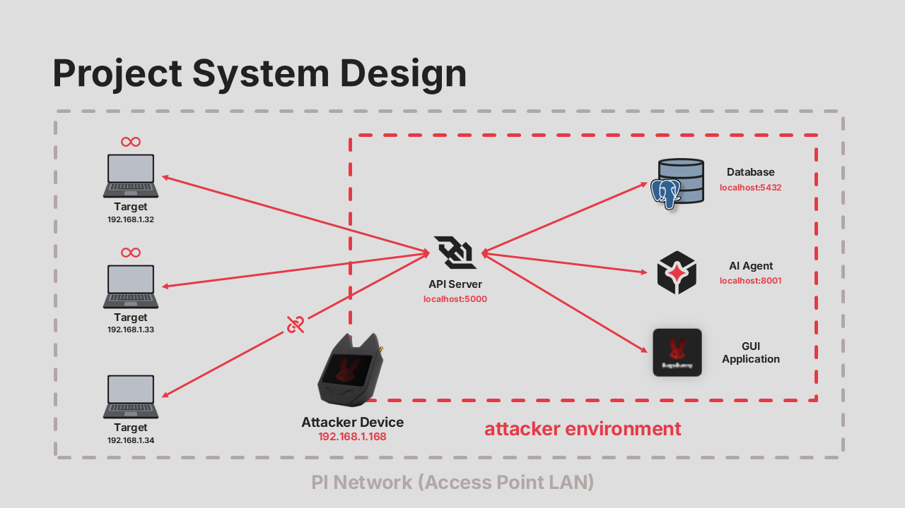
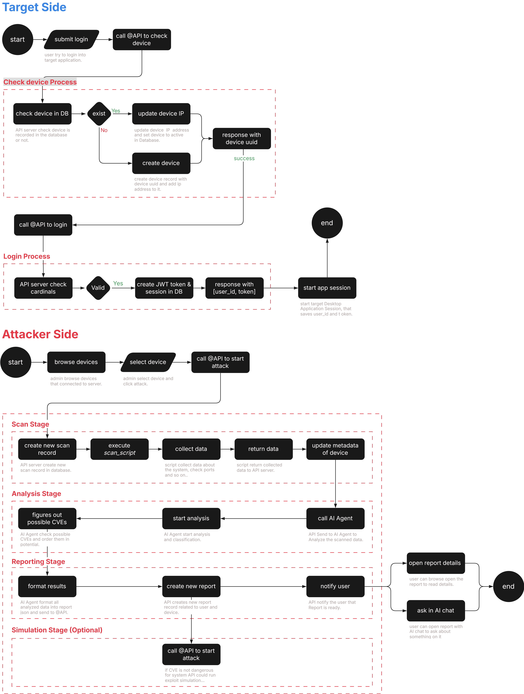

Consent First
Every test starts only after explicit target approval, keeping the system lawful, transparent, and academically responsible.
Graduation Project Portfolio
A Raspberry Pi based AI cybersecurity agent for consent-based vulnerability analysis, real-time monitoring, and clear remediation reporting.
Project Overview
Every test starts only after explicit target approval, keeping the system lawful, transparent, and academically responsible.
The Pi acts as the central hardware probe, access point, scan coordinator, and compact edge environment.
Structured scan data is interpreted by an AI layer that explains vulnerabilities, ranks risks, and recommends fixes.
System Model
BugsBunny combines a Raspberry Pi attacker-side agent, target desktop application, API server, AI agent, and database into a controlled assessment environment. WebSockets carry low-latency logs and reports, while local persistence keeps scan history and reports available after reconnects.

Assessment Flow
The target app authenticates and receives a unique device identity.
The target user grants permission before any scan or test starts.
The Pi agent collects ports, services, metadata, and relevant security signals.
The AI layer maps findings to CVEs, risk levels, and practical mitigation steps.
Users receive a structured report and can ask follow-up questions in an AI chat.

Divisions
Academic Context
The project demonstrates how AI, embedded systems, networking, and ethical cybersecurity can become a compact self-contained platform for individuals, students, and small organizations.